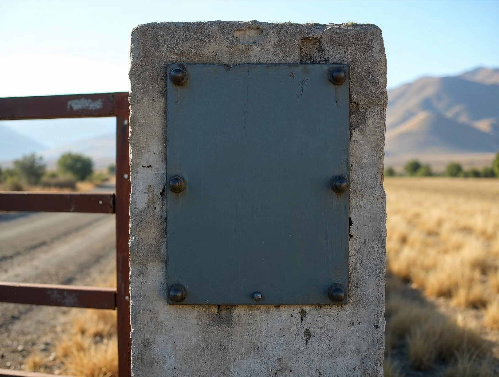
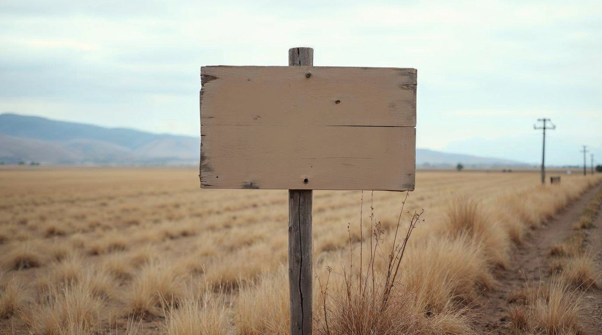

Fundo El Peral
Administrado por Landera
Señalética corporativa: acceso, placa, fundo, dirección e interior
Un sistema de paneles
Todo letrero de Landera es un panel de un color con el logotipo y un texto. Cambia el tamaño y la distancia; no cambia la construcción.
Las reglas
1 · Fondo propio: crema con tinta o tinta con crema. El logotipo nunca va directo sobre metal, madera ni hormigón.
2 · La altura de la versal es 1 cm por cada 4 m de distancia de lectura. A 20 m, 5 cm.
3 · Panel ancho: logotipo horizontal. Panel alto: secundaria vertical. Sobre 15 m, sólo isotipo (lámina 07).
4 · La franja de remate entra sólo si el panel supera 1 m de ancho.
5 · El nombre del predio se escribe según la lámina 34. Los textos, en Aptos Bold; las flechas, las del sistema de íconos (lámina 15).

Placa de acceso · 60 × 90 cmTinta con crema · isotipo + predio · lectura a 5 m: versal 1,5 cm

Identificación de fundo · 120 × 60 cmCrema con tinta · logotipo horizontal + predio en Bold · lectura a 15 m: versal 4 cm
Direccional · 80 × 20 cm por tablaSólo texto y flecha, sin logotipo: la marca ya está en el acceso
Oficinas, bodegas e interior · esquemas
Placa de puerta · 30 × 10 cmCrema · isotipo + nombre
Bodega · 150 × 45 cmTinta con franja (supera 1 m) · sin logotipo
Interna de cuartel · 40 × 18 cmSólo dato · Aptos
Lo que no se haceLogotipo directo sobre madera o metal, sin panel
Altura de versal según distancia · 1 cm por cada 4 m
Invariables
Panel de un color: crema/tinta o tinta/crema · nunca el logotipo directo sobre el soporte · versal de 1 cm por cada 4 m · horizontal en panel ancho, vertical en panel alto, isotipo sobre 15 m · franja sólo sobre 1 m de ancho · nombre del predio según la lámina 34 · Aptos Bold, flechas de la lámina 15.
Variables
El material (acero esmaltado, aluminio compuesto, madera pintada) · tamaño dentro de la regla de distancia · crema o tinta según el fondo del entorno · con o sin «Administrado por» · las direccionales sin logotipo si el acceso ya lo lleva.
⚠ Soportes de referencia generados — reemplazar por fotografía real de los predios
30 · Aplicaciones
Landera · Manual de marca